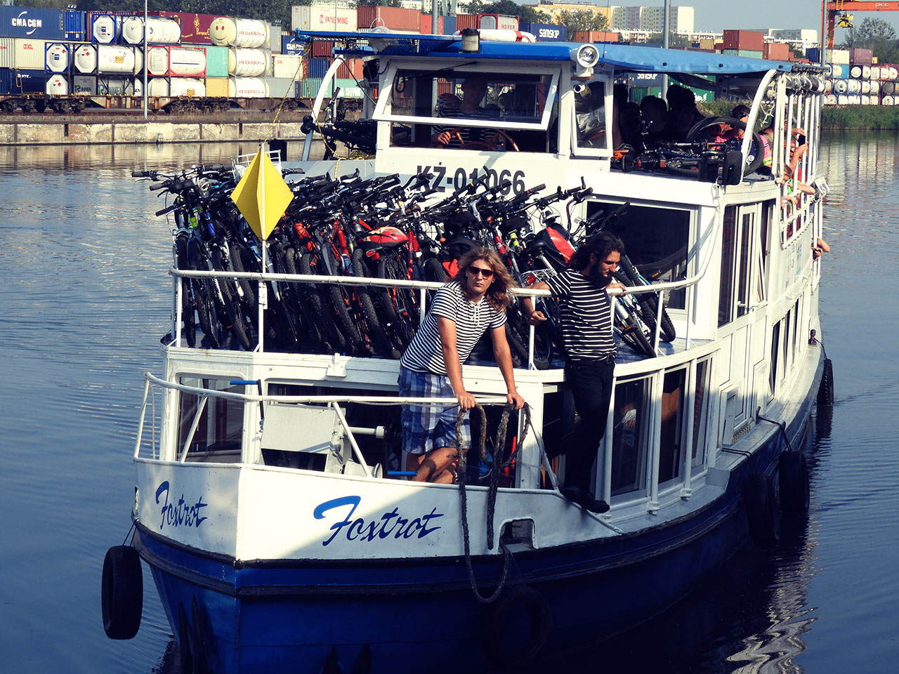

Marina Gliwice
Informacje ogólne
Marina Gliwice, przystań turystyczna ulokowana w Porcie Gliwice na Kanale Gliwickim. To stąd odbywają się rejsy statkiem pasażerskim Foxtrot, działa tu wypożyczalnia łodzi motorowych i kajaków. Dzięki naszej pasji rozwija się w Gliwicach turystyka wodniacka, a Kanał Gliwicki staje się celem wypraw nie tylko osób z okolicy, ale także z całej Polski, a nawet ze Świata. 26 maja 2016 przypłynęła do nas łódź ze Szwajcarii dając dowód na to, że jesteśmy częścia europejskiej sieci dróg wodnych. Z Gliwic można dopłynąć do Amsterdamu, Paryża, a nawet do Marsylii.
Na pokładzie statku Foxtrot, którego portem macierzystym są Gliwice odbywają się rejsy turystyczne, a także tematyczne rejsy muzyczne i kulinarne, zagrało u nas już bardzo wiele zespołów i muzyków z Polski i ze świata, gotowali uznani kucharze. Najdalsze rejsy do Kędzierzyna-Koźla prezentujące uroki całego Kanału Gliwickiego są organizowane kilka razy w sezonie. Co niedzielę statek wyrusza na rejsy przez Śluzę Łabędy i do kolonii kormoranów. Organizujemy półkolonie letnie i imprezy urodzinowe dla dzieci, ciekawe wycieczki szkolne. Można u nas zorganizować niezapomniane imprezy firmowe, rodzinne, spotkania biznesowe, szkolenia - małe, kameralne imprezy dla kilku osób, wesela na statku, a nawet eventy dla 600 uczestników. Nasz bosman przeszkoli chętnych do wypożyczenia sprzętu pływającego, na który nie są wymagane żadne uprawnienia. Dla tych, którzy będą chcieli wypożyczyć łódź motorową z większym silnikiem organizujemy szkolenie motorowodne i przeprowadzamy egzaminy na patent Sternika Motorowodnego.
Prace w ostatnich latach
Od kilku lat trwa modernizacja śluz i jazów. Prace podzielono na trzy etapy, a ostatnim zadaniem będzie odmulenie i przywrócenie niezbędnej głębokości kanału. Po kilku latach przerwy w roku 2017 wznowiono transport węgla z gliwickiego portu do elektrociepłowni we Wrocławiu. Kanał Gliwicki został również dostrzeżony jako atrakcyjny szlak prze zwolenników turystyki wodnej. Pojawiły się statki wycieczkowe i motorówki, a rejsy cieszą się dużym zainteresowaniem. Wielokrotnie już wybrane obiekty kanału uczestniczyły w dorocznej "Industriadzie".
Flota
- Delfin
- Foxtrot
- Heavy
- Reggae
- Romana
- Samba Rumba